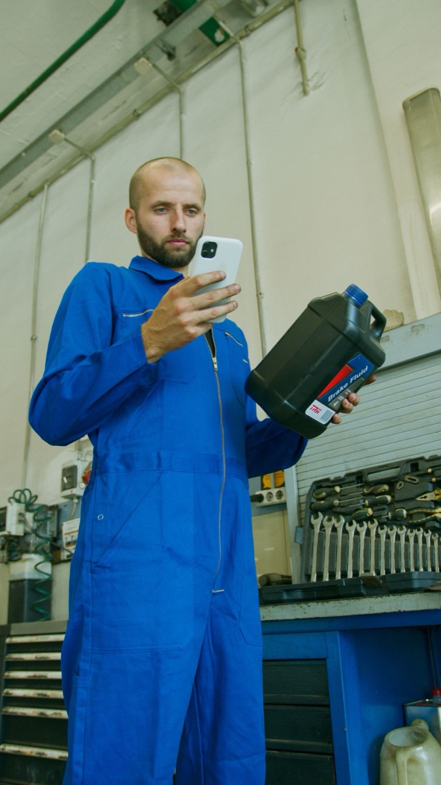
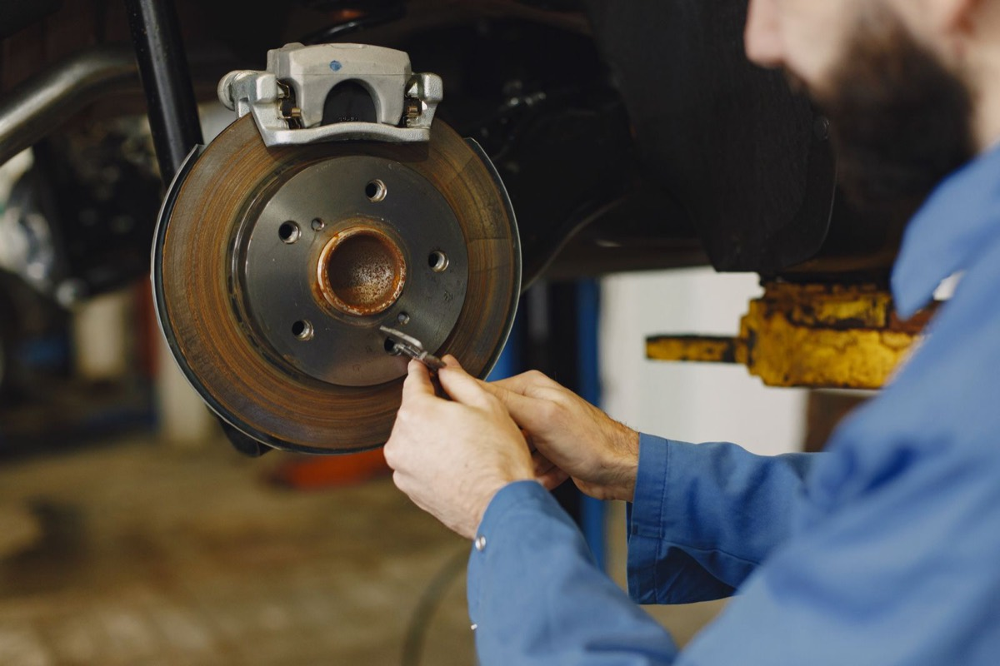
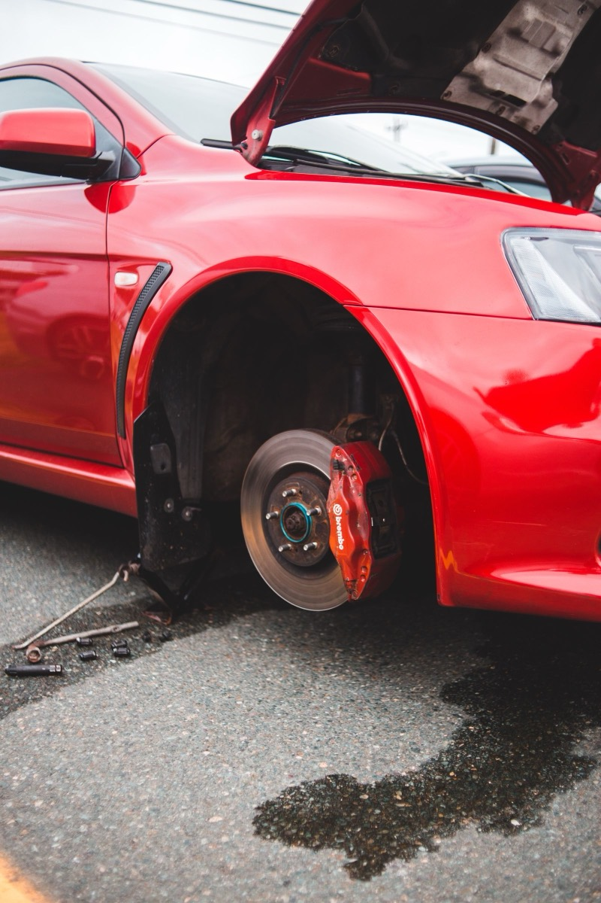

Brake Fluid: The Wet Boiling Point Is the Only Number That Matters
Brake fluid is the only part of the brake system that wears out on a clock instead of on mileage. A pad wears when you use it. Fluid degrades while the car sits in the driveway, because glycol-based brake fluid absorbs water out of the air, and water lowers the temperature at which the fluid turns t
A bottle’s dry boiling point is the number on the label; the wet boiling point is the number that happens to your car. Every DOT 4 fluid has to clear 446°F dry and 311°F wet by law, and the wet figure is the one a daily driver actually lives at once the fluid has absorbed moisture.
The Summit Racing fluid at $14.99 and the Motul 600 at $23.99 hold the same 500 ml. The $9 buys 22°F more dry boiling point and 16°F more wet — and the wet number is the one that matters.

Brake fluid is the only part of the brake system that wears out on a clock instead of on mileage. A pad wears when you use it. Fluid degrades while the car sits in the driveway, because glycol-based brake fluid absorbs water out of the air, and water lowers the temperature at which the fluid turns to gas.
That single fact reorganises the whole buying decision, and it is why the number printed in the biggest type on the bottle is usually the wrong one.
What the law actually requires
Brake fluid sold in the US is governed by FMVSS 116, and the boiling-point requirement is not a marketing claim — it is a floor. From the regulation itself:
DOT 4: 230 °C. (446 °F) equilibrium reflux boiling point DOT 4: 155 °C. (311 °F) wet boiling point
Both figures come from 49 CFR 571.116. The first is the fluid as it comes out of a sealed container. The second is the fluid after it has been deliberately exposed to moisture, and it is roughly 135°F lower.
That gap is the entire subject of this article.

Dry versus wet, and which one your car is at
A sealed bottle is dry. Your brake system is not. Every time you open the reservoir, every time a rubber seal breathes, every time the fluid heats and cools, moisture gets in. Brake fluid is hygroscopic — it pulls water in by design, which is better than letting that water pool as droplets, but it means the fluid in a two-year-old car is somewhere between dry and wet, drifting toward wet the entire time.
So the dry number describes a bottle. The wet number describes your brakes.
This is why a car that stopped fine last summer can fade a pedal on a mountain descent this summer without anything having broken. The fluid did not fail. It absorbed water and lost boiling margin, exactly as specified.

Seven fluids, and what a dollar actually buys
Every price, volume and review count below was read live on 18 November 2026. The last column is arithmetic: price divided by fluid volume, in US fluid ounces (1 liter = 33.814 oz, 500 ml = 16.907 oz).
| Fluid | Volume | Price | Per ounce | Reviews |
|---|---|---|---|---|
| Wagner FC120838 | 12.00 oz | $4.99 | $0.42 | 1 |
| Brembo L04210 | 1.00 liter | $14.99 | $0.44 | 1 |
| Liqui Moly 20154 | 500 ml | $8.99 | $0.53 | 42 |
| Summit Racing SUM-943020 | 16.90 oz | $14.99 | $0.89 | 11 |
| Motorcraft PM20 | 16.00 oz | $15.99 | $1.00 | 5 |
| ACDelco 19299570 | 16.00 oz | $21.99 | $1.37 | 6 |
| Motul 600 100949 | 500 ml | $23.99 | $1.42 | 63 |
Liqui Moly DOT 4, 500 ml → $8.99 · 42 reviews · checked 18 Nov 2026
Motul 600 DOT 4, 500 ml → $23.99 · 63 reviews · checked 18 Nov 2026
The spread is 3.4x per ounce between the cheapest and the dearest, and the absolute prices look much tamer than that because the bottles are different sizes. The Wagner is $4.99 and the Motul is $23.99 — nearly five times as much money — but per ounce the gap is 3.4x, because the Wagner bottle is small.
Per-ounce is the only honest comparison on this shelf, and almost nobody shops that way.

The cleanest comparison in the whole catalog
Here is the pairing worth studying, because it removes every confound.
The Summit Racing SUM-943020 is $14.99 for 16.90 oz. The Motul 600 is $23.99 for 500 ml. Those are not different volumes — 16.90 US fluid ounces is 499.8 ml. Same bottle size, to within a rounding error.
And Summit publishes the boiling points in its own listing:
- Summit Racing DOT 4: 572°F dry, 383°F wet
- Motul 600: 594°F dry, 399°F wet
So for $9 more, Motul gives you 22°F more dry boiling point and 16°F more wet boiling point.
Twenty-two degrees of dry margin is real but academic — both fluids are far above the 446°F legal floor when new. Sixteen degrees of wet margin is the one that does work, because wet is the state your car is drifting toward. If you are boiling fluid on a track day, 16°F is meaningful. If you are commuting, the Summit bottle already carries 72°F of margin over the 311°F floor — with under a quarter of that margin being the difference between it and the premium bottle.
Note the shape of the number: both fluids lose well over 180°F going from dry to wet. 572 to 383 is a 189°F drop; 594 to 399 is a 195°F drop. The premium fluid does not resist moisture better in any dramatic sense. It starts higher and lands higher, by almost exactly the same amount it started ahead.
Liqui Moly at $0.53 an ounce and 42 reviews
The value pick that most buyers walk past is the Liqui Moly at $8.99 for 500 ml — the same 500 ml as the Motul, at $15 less, with 42 reviews against the Motul’s 63. Per ounce it is $0.53 against $1.42, and it is a DOT 4 fluid that legally has to clear the same 446°F / 311°F floor.
Liqui Moly’s Summit listing does not publish dry and wet figures, and I am not going to state them, because an unpublished number is not a number. What the listing does establish is the DOT 4 rating and the price. If the spec sheet matters to you and the seller does not print it, ask the manufacturer directly before you buy rather than trusting a forum table.
That is the honest position: the two fluids with published boiling points are the Summit and the Motul. The others are DOT 4 certified and priced, and that is the extent of what these listings verify.
The one-liter Brembo, and why volume changes the math
The Brembo L04210 is $14.99 for a full liter — 33.8 ounces, twice the Motul’s volume, at $0.44 an ounce. That is within two cents per ounce of the cheapest bottle on the page and one third the per-ounce price of the Motul.
A typical flush consumes well under a liter on most passenger vehicles. If a liter covers your job with margin to spare, buying the small premium bottle twice costs more than buying the big one once.
The Brembo is also a low-viscosity DOT 4 formulation, which is a real distinction on vehicles with ABS and stability control — those systems have small orifices and a lower-viscosity fluid moves through them faster. Brembo publishes that it is low viscosity in the product name itself, which is more than most listings tell you.
DOT 4, DOT 3, DOT 5.1 — and the one that must not be mixed
DOT 3 has a lower dry boiling point than DOT 4. DOT 4 is the common upgrade and is what everything on this page is. DOT 5.1 is higher still and is compatible with DOT 3 and DOT 4 systems — it is a glycol fluid despite the number.
DOT 5 is silicone and is not compatible with any of them. It must never be mixed into a DOT 3, 4 or 5.1 system. The naming is the trap: DOT 5.1 sounds newer and better than DOT 5, and the two are chemically unrelated.
If you do not know what is in the car now, do not guess at it — a flush that mixes chemistries is worse than old fluid.
When to change it
The commonly published street interval is every two years, and the reason is the absorption clock rather than mileage. A car that covers 3,000 miles a year still pulls moisture into the reservoir for two full years.
Track use is a different schedule entirely — many owners change before an event rather than on a calendar, because a wet fluid’s margin disappears fast under repeated heavy braking.
Color is not a reliable test. Fresh DOT 4 is amber and darkens with age, but the relationship between color and water content is loose enough that a fluid can look acceptable and test badly. A tester, or the two-year clock, beats an eyeball.
The procedure, and where DIY goes wrong
1. Find the bleeder screws before you buy anything. Bleeding order follows their location, and the sequence on a truck with a load-proportioning valve is not the same as on a small car. That sequence comes from the service manual for your vehicle, not from a generic rule.
2. Never let the reservoir run dry. Air pulled into the master cylinder means bench-bleeding it, which turns a one-hour job into an afternoon. Top up after every caliper.
3. Do not pump the pedal to the floor on an older vehicle. The pedal travels further than it does in normal use and can push the master cylinder seal through corrosion it normally never touches — a leak created by the bleeding itself. Firm half-travel strokes are the safer technique.
4. Fresh fluid is clear-ish and moves easily. If what comes out of the bleeder is dark and thick, keep going; you are still flushing the old fluid out.
5. Dispose of the old fluid properly. It is toxic and it is not something to pour down a drain.
Is any of this a CARB issue in California?
No. Brake fluid is not emissions equipment, there is no Executive Order to look for, and a fluid change has no effect on a smog inspection.
The relevant regulation is federal, not California-specific: FMVSS 116 sets the boiling-point floors quoted above, and it applies in every state.
Topics
- Brakes